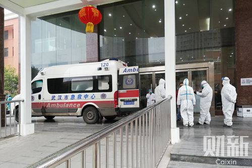

武汉医疗系统应急：七家定点医院仓促改造，临时医院将开建
原文链接 备份链接 七家二级医院被征用，成为收治新型冠状病毒患者的定点医院，但医护人员防护设备紧缺，隔离病房仍未完工。初露端倪的临时医院，最快也要六天才能建成 文 |《财经》信娜 陈晶 房宫一柳 实习记者 朱贺 编辑 | 王小 “到底什么 …
【财新网】（实习记者 张舒琳 记者 马丹萌）
门诊排起长龙，留观区一“床”难求
武汉市汉口医院，是武汉收治新型冠状病毒患者的定点医院之一。发热门诊大厅内，等待问诊的患者排起长长的队伍。大厅前后均只打开一道玻璃门，两名保安在一旁把守，严格规定来就诊的人从前门进，后门出。财新记者1月22日探访汉口医院时看到，发热门诊封闭的大厅内，挤满了戴着口罩的患者和家属，从挂号到就医，需要在狭小的空间内排队长达七八个小时。
多名患者称，从21日晚上到这里排队，一直到22日下午仍未到号。
汉口医院由原消化科病房改造而来的留观区，走廊临时增设了一排病床，患者躺在床上输液。尽管临时增设床位，但很多前来就诊的患者仍然一床难求，护士表示“已没有床位”。一名年轻男子称，“排到了能怎么办呢，在这里（留观区）还不是交叉感染？”
由于医院腾不出床位收治新的发热患者，对于症状较轻的患者, 采取措施往往是开口服药，建议患者实施居家隔离医学观察。

2020年1月22日，汉口医院门诊大厅。图/财新记者 马丹萌
汉口医院原来的感染性疾病科门诊（发热门诊）楼已改为住院部，整栋楼大门紧闭。门上所贴公告称，由于目前特殊情况，仅在规定时间接收家属送来的物品，物品需独立包装，一人一件，由感染科员工通道接收。一名患者告诉记者，她母亲患肺结核，也住在这栋楼，“昨天接到医院电话，让我妈妈快点出院，我妈妈病还没完全好。”
相比喧闹嘈杂的门诊部，按就诊程序来此隔离治疗的病人只有少数。发热患者前来医院就诊时，要先通过血常规、肺部CT等检查手段判断是否为病毒性肺炎，再根据检测结果判断是否需要隔离。根据武汉市卫健委公告，要通过预检分诊、结合临床检查、实验室检查和胸部影像检查，层层筛查后确认疑似病例，由辖区疾控中心将样本转运到市疾控中心，市疾控中心转运到省疾控中心进行核酸检测，最终才能确诊。

2020年1月22日，门缝里的汉口医院住院部，感染性疾病科门诊（发热门诊）楼已改为住院部，整栋楼大门紧闭。图/财新记者 马丹萌
一名发热患者家属称，带着父亲做了血常规、CT、甲流和乙流病毒核酸检测等多项检查，前后检查花费几千元，至今没有确诊。1月17日他们到武汉市中心医院，因没有病床而无法住院。1月22日到武汉市第九医院，被询问住在哪个区，随后，医院称不接收跨区病人。最终，她通过一位朋友搭线，在汉口医院排到了号。她表示，除了一直奔波的劳累，更多的是对父亲无法及时得到治疗的担忧。
数字背后的疫情防控
根据1月23日武汉市卫健委发布的消息，目前全市发热患者增多趋势明显，确实存在发热门诊就诊排长队、留观床位紧张的现象。为此，武汉市指挥部紧急研究决定，征用相关医院作为发热患者定点诊疗医院，已确定市汉口医院、市红十字会医院、市普爱医院西院、市七医院、市九医院、市武昌医院、市五医院等七家医院整体征用，其门诊部全部作为发热门诊集中接诊全市发热患者，并安排3000余张病床收治疑似和确诊病例。同时，全市二级以上综合医院仍须设置发热门诊，开展预检分诊和一般发热患者的诊疗，积极引导发热伴呼吸道症状的患者到全市发热患者定点诊疗医院。
工作人员介绍，1月22日，汉口医院让住院病人实行重症转院、非重症回家休养，改变格局后的汉口医院已转成发热患者定点诊疗医院，不再接收其他患者。

2020年1月22日，停在汉口医院外的救护车。图/财新记者 马丹萌
另外，武汉市也正在蔡甸区武汉职工疗养院设立医院，参照北京“小汤山”模式对新型冠状病毒肺炎患者进行集中收治。该医院建筑面积为2.5万平方米，采用活动板房形式，可容纳1000张病床，拟于2月3日建成。（参建财新网《武汉拟建“小汤山”医院 集中收治肺炎患者》）
对于疑似病例的样本检测流程，武汉卫健委公告称，1月16日之前湖北省没有试剂盒，需要将样本送到北京国家指定的检测机构进行病毒分离和核酸检测，从采样开始到结果返回约需要3—5天。1月16日以后，可将样本转运到市疾控中心，市疾控中心转运到省疾控中心进行核酸检测，预计从采样开始到结果返回约需要2天左右的时间。
为提高检测速度，从1月22日开始，武汉市已指定各定点救治医院、发热定点诊疗医院的对口帮扶医院以及市疾控中心等具备相应防护级别的生物安全实验室开展相关样本的病原核酸检测工作（第一批共10家机构），预计全部运行起来每天可检测样本近2000份。为此，武汉市计划紧急调运3万人份试剂盒发放到指定检测机构，目前已下发6000人份。
被忽视的华南眼镜城
早期公布的多起肺炎病例均与华南海鲜城有关联。华南海鲜城位于武汉市江汉区，除了各类海鲜，还卖野味产品。而华南海鲜市场东区2层，还有一个华南眼镜批发市场，这里聚集着七十多家眼镜店。
2019年12月31日，华南海鲜城出现一批穿着防护服的人在店外进行消毒，1月1日宣布休市整治，这距离12月8日发现首例“不明原因”肺炎患者已经过去23天。但直至1月10日，楼上的眼镜市场仍然可以继续经营，并没有通知商家搬迁。
一名眼镜店店主称，他们一家人都在眼镜批发市场开店，父亲感染新型冠状病毒肺炎入院，病情一度较重。
1月5日，这名店主的父亲开始发烧，送往当地社区门诊治疗，吃下退烧药后，六个小时后再次发烧，四天内如此反复。1月9日，他送父亲到汉口医院，检查提示肺部感染，当天晚上就住院治疗，属重症病例。62岁的父亲患既往有高血压和糖尿病。
尽管当时报道的一些病例均指向华南海鲜城，但官方通报称未发现人传人现象，眼镜店店主也未感到警惕。事后，这位眼镜店老板回忆，“很多海鲜城的人来我们楼上上厕所，我们跟他们接触也比较多。我知道的被感染的眼镜店老板就有3个，还有一些平常出现的面孔，某天突然就不来上班了。”
“今年肯定不能好好过年了，出了这个事，我和老婆孩子都提心吊胆。”老板称，一家人本来已经报了春节去三亚玩的旅游团，现在不得已取消了。此外损失的还有两家眼镜店的盈利。按照惯例，1月份很多人返乡，眼镜城也将迎来生意的高峰期，春节前后一个月大概能有十万元营业额。好在眼镜店老板父亲的医药费由政府兜底，“交了六万，三天后全部退给我们了。”
此文限时免费阅读。感谢热心读者订阅财新通，支持新闻人一线探求真相！成为财新通会员，畅读财新网！
更多报道详见：【专题】武汉肺炎防疫全纪录（实时更新中）
原文链接 备份链接 七家二级医院被征用，成为收治新型冠状病毒患者的定点医院，但医护人员防护设备紧缺，隔离病房仍未完工。初露端倪的临时医院，最快也要六天才能建成 文 |《财经》信娜 陈晶 房宫一柳 实习记者 朱贺 编辑 | 王小 “到底什么 …
原文链接 备份链接 ********** *************协和医院发热门诊门口，排队患者人数较多，约为50多人，已经从门诊楼内排到了楼外的人行道上，一旁的输液室则有20多人排队。一位未佩戴口罩的患者进入楼内，立刻有医护人员向其发 …
原文链接 备份链接 记者/韩谦 魏晓涵 李佳楠 张帆 颜星悦 佟晓宇 梁婷 李东 郭慧敏 实习记者/陈威敬 龙天音 编辑/杨宝璐 宋建华 被确诊为河南省首例新型冠状病毒感染的肺炎患者，曾于1月8日在太康县人民医院治疗 国家卫健委消息，截 …
原文链接 备份链接 ********** *****他们很想回家，和孩子最近一次见面还是暑假。但谁也不敢回去。“万一有什么事，也不能把病毒扩散到别处，是不是？” ***** 6时35分，汉口站广场上，一队警务人员正在开会。 新京报记者 …
原文链接 备份链接 记者 | 刘畅 王梓辉 年轻人与老年人的两重世界 “我所在的镇距离武汉开车只要两个小时，武汉夜里凌晨两点多宣布封城，我们镇上有人夜里就开车回来了。”家住在武汉西边荆州监利县网市镇的蔡姗发现，在武汉肺炎疫情开始上涨的1 …